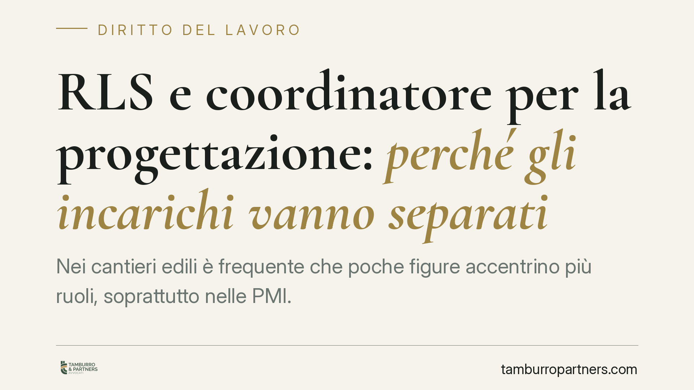

RLS e coordinatore per la progettazione: perché gli incarichi vanno separati
Nei cantieri edili è frequente che poche figure accentrino più ruoli, soprattutto nelle PMI. Ma cumulare l'incarico di rappresentante dei lavoratori per la sicurezza (RLS) con quello di coordinatore per la progettazione (CSP) apre un problema di terzietà. Vediamo da quali norme del D.lgs. 81/2008 discende l'incompatibilità e cosa deve controllare chi gestisce la sicurezza in cantiere.

Il tema: accentramento di ruoli e conflitto di interessi
Nell'organizzazione della sicurezza nei cantieri temporanei o mobili capita spesso che la stessa persona ricopra più funzioni. È una prassi comprensibile nelle imprese di piccole dimensioni, dove le competenze tecniche si concentrano in pochi soggetti. Il problema sorge quando le funzioni accumulate hanno nature in conflitto tra loro.
È il caso del cumulo tra RLS (rappresentante dei lavoratori per la sicurezza) e coordinatore per la progettazione (CSP), quando quest'ultimo appartiene a un'impresa che opera direttamente nel cantiere con propri lavoratori. Si tratta di due ruoli con logiche opposte: uno di tutela della parte, l'altro di garanzia tecnica trasversale.
> Nota sulla fonte: sul punto risulta richiamato un interpello del Ministero del Lavoro. Al momento della redazione non è stato possibile verificare in modo definitivo numero, data e testo integrale dell'atto. Trattiamo quindi la questione come ricostruzione interpretativa fondata sul testo del D.lgs. 81/2008. Si invita a verificare l'eventuale atto ufficiale e il relativo link prima di assumere decisioni operative.
Inquadramento normativo
I due ruoli nascono da esigenze diverse, e il Testo Unico sulla sicurezza (D.lgs. 81/2008) li disciplina separatamente.
L'RLS è previsto e regolato dagli artt. 47 e 50. È una figura di rappresentanza: tutela i lavoratori, è consultato su valutazione dei rischi e misure di prevenzione, vigila e segnala in loro nome. La sua funzione è, per definizione, di parte.
Il coordinatore per la progettazione (CSP) appartiene invece al sistema dei cantieri (Titolo IV). Le definizioni sono all'art. 89; gli obblighi del committente o del responsabile dei lavori all'art. 90; gli obblighi specifici del CSP all'art. 91, tra cui la redazione del Piano di Sicurezza e di Coordinamento (PSC), i cui contenuti sono dettagliati all'art. 100. Va tenuto distinto il coordinatore per l'esecuzione (CSE), i cui obblighi sono all'art. 92: verifica l'applicazione del PSC durante i lavori. CSP e CSE sono ruoli diversi e non vanno confusi.
I requisiti professionali del coordinatore (titoli di studio, esperienza e formazione specifica) sono fissati dall'art. 98, che rinvia per il percorso formativo all'Allegato XIV. Si consiglia di verificare la versione vigente di tale allegato, oggetto di aggiornamenti nel tempo.
Dove si radica l'incompatibilità
Il conflitto non nasce da un divieto letterale e isolato, ma dalla struttura stessa dei due ruoli. Il coordinatore esercita una funzione tecnica che presuppone terzietà e indipendenza di giudizio: deve garantire il coordinamento tra imprese e valutare rischi interferenziali senza essere condizionato dagli interessi di una singola parte.
L'RLS, al contrario, agisce nell'interesse dei lavoratori che rappresenta. Quando l'RLS appartiene a un'impresa che lavora nel cantiere con proprie maestranze, e assume anche il ruolo di CSP, si trova a dover coordinare e valutare — in posizione di apparente imparzialità — l'attività della stessa impresa di cui è espressione la sua funzione di parte. È qui che i requisiti di indipendenza sottesi all'art. 98 e alla logica dell'art. 91 entrano in tensione con la natura dell'art. 50.
Un eventuale interpello del Ministero, su questa linea, non introdurrebbe una regola nuova: offrirebbe un'interpretazione ufficiale di principi già desumibili dal sistema.
Implicazioni pratiche per le imprese
Il rischio concreto riguarda soprattutto le PMI edili, dove l'accentramento di incarichi è fisiologico. Una nomina viziata da incompatibilità può esporre a contestazioni degli ispettori del lavoro, con riflessi sulla validità degli atti di coordinamento e profili di responsabilità in caso di infortunio.
La questione tocca anche il committente e il responsabile dei lavori, destinatari dell'art. 90: la scelta e la nomina del coordinatore rientrano tra i loro obblighi, e un'attribuzione impropria può ricadere sulla loro posizione.
Cosa fare in concreto
- Mappare i ruoli assegnati a ogni figura della sicurezza e individuare eventuali sovrapposizioni tra funzioni di parte (RLS) e funzioni tecniche di coordinamento (CSP/CSE).
- Separare gli incarichi quando l'RLS appartiene a un'impresa operante in cantiere con propri lavoratori: affidare il ruolo di CSP a soggetto terzo con i requisiti dell'art. 98.
- Verificare i requisiti formativi del coordinatore rispetto all'Allegato XIV, controllandone la versione aggiornata.
- Documentare le nomine di committente o responsabile dei lavori (art. 90), tenendo traccia della verifica di indipendenza.
- Richiedere un controllo preventivo delle nomine prima dell'avvio dei lavori, quando l'assetto organizzativo è ancora modificabile senza impatti sul cronoprogramma.
---
Contributo informativo a cura di Tamburro & Partners - Avv. Giuseppe Tamburro. Non costituisce parere legale.
Ogni storia di lavoro ha i suoi tempi.
Se gestisci HR e vuoi un confronto su contenzioso, ispezioni o licenziamenti, scrivi allo studio. Ti rispondiamo entro un giorno lavorativo.